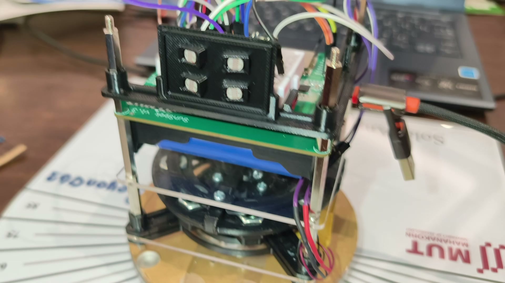

ยานของเรา
ยานต้องหันเข้าหาหลอดไฟเอง ด้วยล้อหมุนล้อเดียว
ภารกิจ 1หันเข้าหาหลอดไฟ แล้วค้างให้นิ่ง
ภารกิจ 2หันไปตามมุมที่กำหนด แล้วถ่ายภาพ

เซนเซอร์แสงชิ้นงานพิมพ์ 3 มิติสีดำของผู้จัด ติดหน้ายาน มี LDR 4 ตัว ซ้าย 2 ขวา 2
บอร์ด SunSeekESP32-S3 อยู่บนบอร์ดนี้ เฟิร์มแวร์ที่เราแก้ก็รันที่นี่
ล้อปฏิกิริยามอเตอร์ DC + วงเหล็กถ่วง เป็นสิ่งเดียวที่ทำให้ยานหมุน
ไม่เห็นในภาพนี้: กล้อง ESP32-CAM ติดด้านซ้ายของยาน ห่างจากเซนเซอร์แสงราว 90° ส่งภาพทาง Wi-Fi ช่อง 11 เพราะช่อง 1 ที่กล้องทุกทีมใช้แน่น ใต้กล้องมี IMU GY-89 (บอร์ดสีแดง) และยังมีแบตเตอรี่กับสวิตช์ไฟ
ภาพถ่ายจริง 6 ต.ค. 2569
03